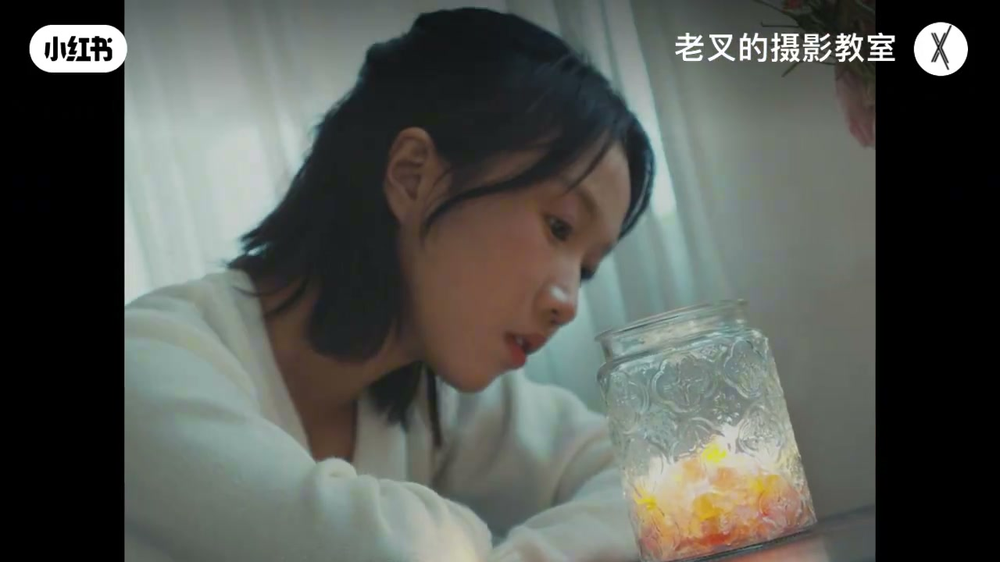
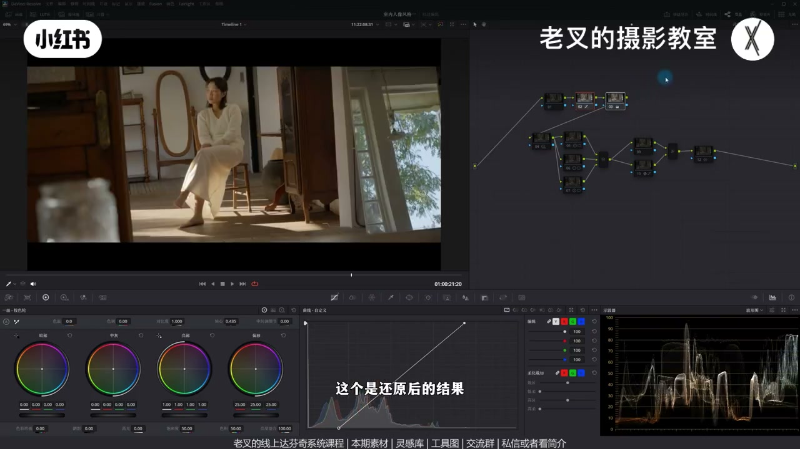
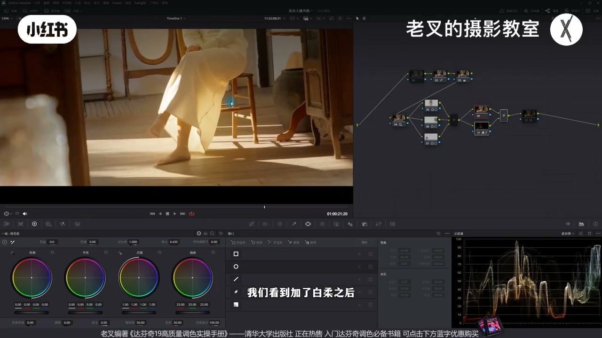
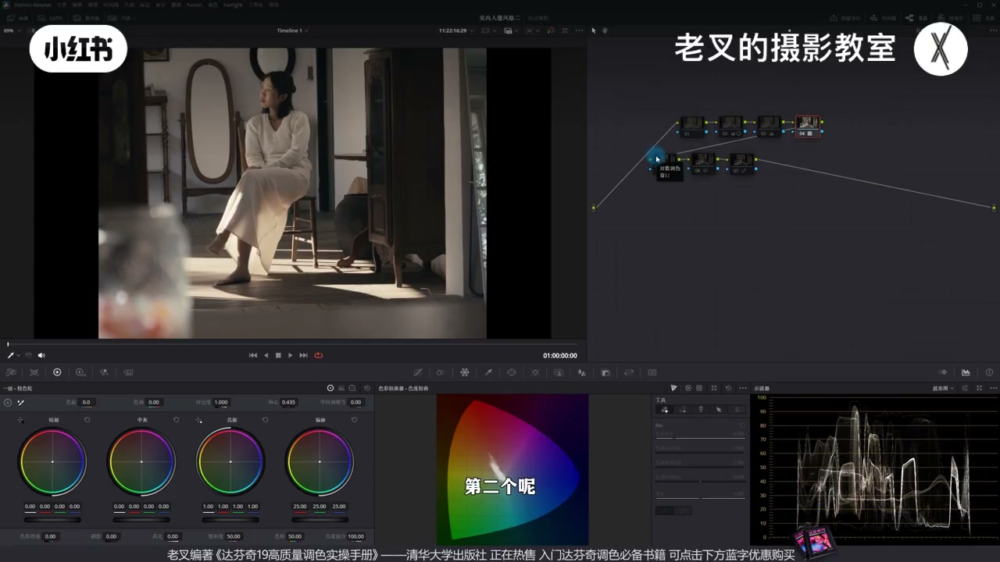
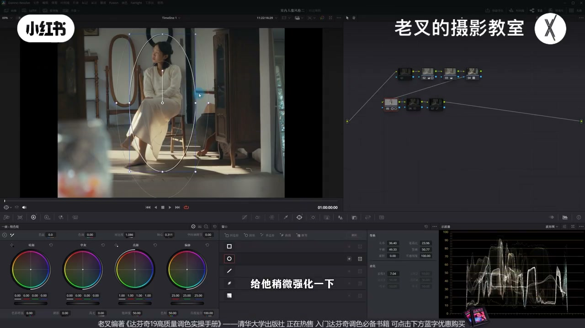

内容要点
老叉用小明同学短片演示：缺灵感时可看内容导向与音乐情绪。同内容两版风格——温柔质感：HDR 先降反差再局部给人物/镜面加反差并加白柔；现代快节奏：灰片直接套 FilmLooks 2383（D60），关键是 LUT 前降对比、补饱和以匹配预设，后再微调。用音乐定故事流向与调色走向。
知识结构
内容+音乐定风格；两版对照后讲调法（中含曲多多合作段）。
HDR 降反差→人物/镜面遮罩加反差→白柔→弱化过黄肤暖。
灰片直接套 2383 D60；问题是反差过强+饱和不足。
前节点匹配 LUT；后节点遮罩/靠青/柔和对比度按需。
同一素材可因音乐走出完全不同电影感。温柔风用「全局降反差 + 局部还反差 + 白柔」；套 LUT 时先让素材匹配预设工况，再在后面修，而不是盲套后硬拧。
00:00-02:22缺灵感：内容与音乐都是参考
风格可参考视频内容导向，也可参考音乐。同组短片两版风格完全不同，剪辑差别不大，依据主要是音乐——通过音乐感受故事流向再匹配调色。
中间有曲多多找乐与福利说明；找好音乐后再对画面匹配调色。素材免费分享。

02:22-04:08风格一：温柔——先降反差再局部强化
暖调常被做成特强反差突出明暗，易脏且主体不突出。反其道：还原后 HDR 抬 Shadow、压 Light，小幅抬 Highlight 少牺牲高光——整体先发灰，方向对，但人物也灰则不对。
后节点人物遮罩单独加对比，使人物成反差最强、视线聚焦；并行给过灰镜面/贯穿全片的玻璃加反差。再加白柔强化温柔。最后略降脸上过黄暖饱和，勿失血色。


04:08-05:20风格二：现代快节奏——灰片套 2383
音乐更快更现代，要明确冷暖反差，节点很少。灰片可直接用 LUT 库 FilmLooks 的 2383（选 D60 中间色温档），不必非得色彩空间转到 Cineon/CineLog。
套上后常见：反差太强、欠饱和、颜色不够。

05:20-06:45LUT 前匹配、后微调
LUT 针对特定工况。务必在前面建节点让素材匹配：如先降对比、单独节点补饱和，出片往往已可用。
再对 LUT 结果后调：人物遮罩加反差、向量蓝靠青、柔和对比度等。也可用音乐重想剪辑与风格。鼓励给摄影师反馈多出练习素材。

完整转录（218段）
以下文本由 Whisper medium 模型自动转录，可能存在少量识别误差，已尽可能修正。
很多朋友对视频调色一直存在的一个问题
就是我缺少灵感
其实对于一个画面的风格素材
我们有非常多值得参考的方向
第一个就是视频本身的内容导向
第二个就是音乐的素材
这是小明同学拍的一组短片
我同样会免费给大家分享
我给这组短片调了两种风格
我们可以快速的看一下
这是两种完全不同的风格对吧
大家更喜欢哪一种
内容其实是一样的
剪辑的区别也不是特别大
那两种风格的参考依据是什么
其实就是音乐
我们能够通过不同的风格
去把音乐变成不同的风格
去调整音乐的变化
去把音乐变成不同的方式
去把音乐变成一种音乐的变化
去把音乐变成一种音乐的变化
去把音乐变成一种音乐的变化
这是两种完全不同的风格对吧
大家更喜欢哪一种
内容其实是一样的
其实就是音乐
我们能够通过音乐来感受到故事的流向
后面我会给大家分享这两种风格怎么调
而要说到找音乐
那就不得不提曲多多平台了
不仅个人使用非常方便便宜
企业会员更划算
折算下来一天只需要一杯咖啡钱
选取快捷方便
可以根据场景情绪这种关键词
快速的找想要的音乐 歌单
类别详细
并且都是影视级别的质量
但是我相信大家对于找音乐都是爱恨交织
想要找到合适的音乐非常耗时耗力
曲多多的AI相似音乐就可以解决这个问题
只需要你把喜欢的对标视频导入
曲多多就会自动识别
并给你推荐相似的音乐
大幅减少找音乐的时间
至少你可以在客户说这个BGN不错
但是你换一个同风格的
这个我听腻了的时候
你可以快速的完成它的需求
曲多多也给我们送了福利
大家只需要在这个位置
留言老X的摄影教室
就可以免费领取会员
等我们找好了音乐之后
我们就可以对画面来进行匹配调色了
第一个风格
我个人感觉还是需要有一定的温柔质感
以这个画面为例
我们看到画面
对于暖调的结果
我们通常会把它做的反差特别强
想要突出名语暗的关系
就类似这种结果
但是这样做会有点脏
而且主体也不够突出
所以我换了一个思路
直接来看操作
这个是还原后的结果
整体还是不错的对吧
因为小妹同学光用的还是比较不错的
但是很无聊
所以我们来到第二排的节点
在第二排的第一个节点中
我反其道而行
我用HDR色轮给整体降低反差
也就是提高了Shadow色轮的曝光
再降低了Light色轮的曝光
然后小幅提高Highlight色轮的曝光
让高光不要牺牲太多
就这里的光
我就不从头开始操作了
整个工程我都会给大家发
大家如果想要仔细的看
可以自行开关节点
降低完反差之后
整体画面都发挥了
方向是对的
但是人物也发挥了
这就不对了对吧
所以我们在后面再来一个节点
给人物画一个遮罩
对人物单独的去强化一点反差
也就是增加一点对比度
这样做
人物就是画面中反差最强的结果了
所以你的视线中心也会更加的聚焦
这个思路特别适用于环境
过于一致但是杂乱的结果
还没完
右侧的镜子实在是太灰了
所以我再来个并行节点
也给右侧的镜子增加了一点反差
左侧角这里一个玻璃也是
我们刚刚看过全片
这个玻璃屏是贯穿全片的元素
所以我们不能忽视它
然后我又给画面加了一个白揉
这个白揉我们之前讲过非常多次
怎么加我就不重复了
我们看到加了白揉之后
这种温柔的质感不就更明显了吗
效果还挺好的对吧
最后我就再来了一个节点
把不舒服的颜色给它弱化了
也就是这个画面中人物脸上的暖
我觉得脸上的暖太黄了
稍微给它降低了一点饱和度
但也不能降太多
你不能让它失去血色
这样我们就给这个画面
带来了这种温柔的质感
我觉得效果还不错的
然后我们来到第二种风格
这个风格就非常有趣了
我们看到节点数量是不是非常少
我们通过音乐能够感受到
第二种风格的节奏比较快比较现代
那么我就想让画面有明确的冷暖反差
所以我这里用的是2383来操作
我把节点给大家开关一下看
在灰片状态下
我个人认为
2383你直接套用就行了
你不是一定要用色彩空间转换的
给它转换成CineLog
太麻烦了
它是灰片对吧
那灰片我就在4号节点加了一个2383
就是达芬奇在
他在拉特库的FilmLooks中自带的2383
我选择的是D60
它这个色温是相对中间那一档的
加完了之后画面有问题对吧
有什么问题
两个问题
第一个就是反差太强了
第二个就是欠了太多的饱和度
导致画面中其实没有什么颜色
所以我在前面
重点是在前面
一定要在前面
我进行了几个节点
我先是在2号节点给画面降低了对比度
我们看到这里降低了对比度
然后也给它稍微调了一下色温
往你想的方向调就好了
这都问题不大
然后在3号节点
当然你放在一个节点也可以
我个人习惯把饱和度单独另一个节点
在3号节点中增加一点饱和度
此时你看
是不是画面就有一个不错的结果了
该有的颜色都有了
反差也是比较到位了对吧
那么为什么一定要在前面建立节点来调整呢
要注意的是
LUT是针对某一种情况制作的预设
我们可以简单的把它理解成预设
它当然不是预设
我们需要让我们的素材
匹配上这个LUT适合的情况
所以我们要在前面建立节点
让素材匹配上这个LUT
当你的画面呈现出不错的结果之后
你可以说
我要对这个LUT的结果来做调整
那么你就可以在后面建立节点
来对已有的结果去做操作了
比如说我想
哎呀 我觉得人物有点发灰
我给人物再画个遮罩
给它稍微强化一下
让它增加一点反差对吧
这个是可以的
也可以让背景中这里不是有点蓝吗
我想让它稍微往轻的方向走一点
我在后面加个节点
用蜘蛛网把蓝色往轻色方向走一点
稍微走一点就行了
也可以在最后来一个柔和对比度之类的
这个都随你
问题都不大
这样调是不是整体位置还是不错的对吧
大概的思路与大家分享一下
大家素材别忘了领取
当然所有的原素材我都会传
你也可以自己按照你的思路去做重新剪辑
也可以去曲度桌上看一看音乐
根据音乐来调整一下你的剪辑思路
以及你整个画面调色的风格走向
用音乐来给你调色做参考
要领取的话私信或者看我剪辑就可以
还有达芬吉的线上系统课程
线下调色训练赢
最后我们也一起在评论区
夸一夸小明同志
鼓励他一下
希望他在年前能够再出一条
让大家手上有更多的素材
可以练习督促一下他
讲到这里
如果你觉得对你有帮助的话
还希望多多赞联
好了
这期就到这里
886